はじめる
起動するとスタート画面が開きます。ここから作業を始めます。
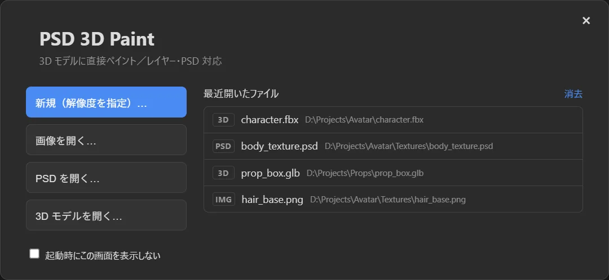
- 3D モデルを開く… で
.fbx/.glb/.vrm/.objなどを選びます。モデルが無くても、形状 メニューの球・箱・円柱などで試せます。 - モデルと同じフォルダーにテクスチャ画像があれば、割り当て画面 が出ます。「取り込む」を押すと、マテリアルごとのレイヤーグループになります。
- 左のツール列から ブラシ（B）を選び、モデルの表面をドラッグして塗ります。
- Ctrl+S でプロジェクト（
.p3dp）として保存。完成したら ファイル ＞ PSD を書き出す（Ctrl+E）や PNG で書き出します。
画面の見かた
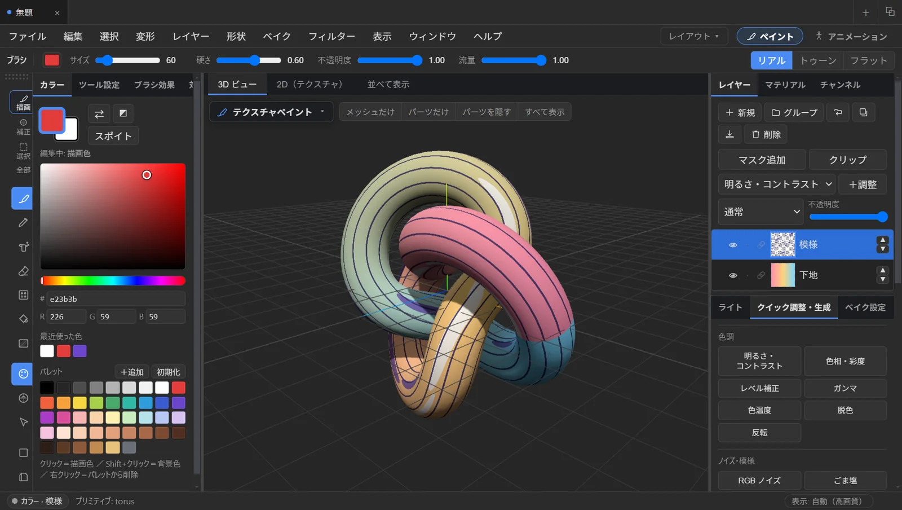
- 上: メニューバーと、右端の ペイント / アニメーション のワークスペース切り替え（Ctrl+1 / Ctrl+2）。その下に、選んでいるツールの設定（サイズ・硬さ・不透明度など）。
- 左: ツール列（上のタブで 描画 / 補正 / 選択 / 全部 を切り替え）と、カラー・ツール設定・ブラシ効果のタブ。
- 中央: 3D ビュー｜2D（テクスチャ）｜並べて表示 のタブ。
- 右: レイヤー・マテリアル・チャンネル、ライト・クイック調整・ベイク設定、オブジェクト（アウトライナー）などのパネル。
- 下: ステータスバー。いま描き込まれる先（カラー / 法線、どのレイヤー）と、操作のヒントが出ます。
複数の作品を同時に開くときは、上のタブ（Ctrl+Shift+T）や新しいウィンドウ（Ctrl+Shift+N）を使います。タブごとにレイヤーや履歴は完全に独立しています。
3D ビューの操作
Blender と同じ操作です。
| 操作 | 割り当て |
|---|---|
| 回転 | 中ボタンドラッグ |
| 平行移動 | Shift + 中ボタンドラッグ |
| ズーム | ホイール、または Ctrl + 中ボタンドラッグ |
| 正面 / 右 / 上 | テンキー 1 / 3 / 7（Shift で反対側） |
| 透視 ⇔ 平行投影 | テンキー 5 |
| 全体を表示 | テンキー . |
表示 ＞ 表示モード で、レンダリング（ライトと影あり）・トゥーン・影なし（テクスチャの色そのまま）を切り替えられます。右上の リアル / トゥーン / フラット ボタンでも同じです。
塗る
ブラシ・鉛筆・エアブラシ・消しゴム・にじみ・ぼかし・塗りつぶし・グラデーション・テクスチャブラシ・クローン・修復・覆い焼き・焼き込み・テキスト・パスが使えます。3D ビューでも 2D ビューでも、同じように塗れます。
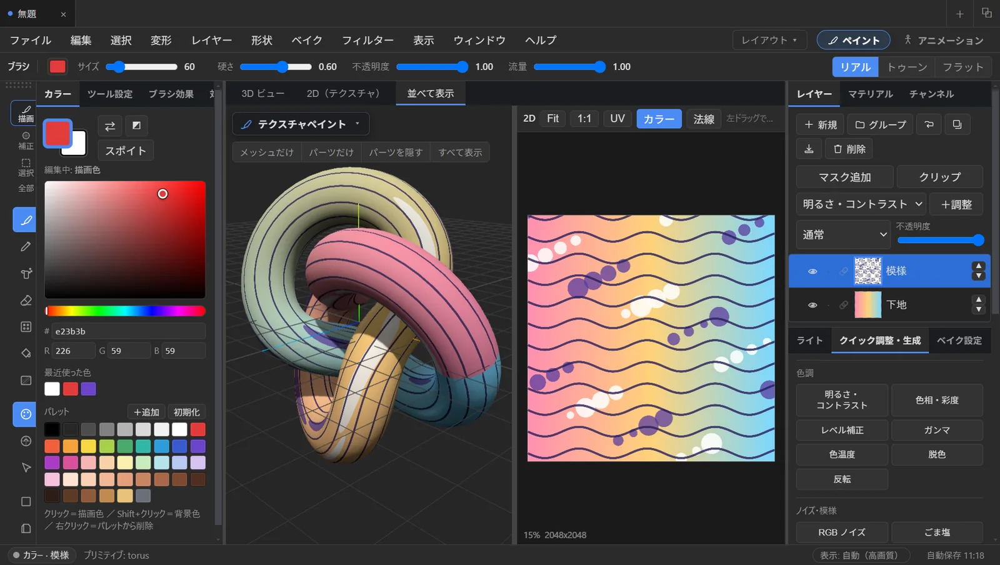
- ブラシサイズは [ ]、または Alt + 右ドラッグ（左右でサイズ、上下で不透明度）。
- 右クリック（動かさずに）でその場所の色を拾います（一時スポイト）。
- Shift + クリックで、前のストロークの終わりから直線を引きます。
- 1〜9 / 0 で不透明度を 10〜90% / 100% に。
- ペンタブレットの筆圧に対応（サイズ・不透明度に効かせられます）。
グラデーション（Shift+G）
ツール設定で 3D と 2D を選べます。3D では、モデルの上を始点から終点へドラッグすると、表面の 3D の位置 で色が決まります。UV の継ぎ目や島をまたいでも、きれいにつながります。
選択範囲
矩形（M）・楕円・なげなわ（L）・ファジー選択（U）。選択中は、ブラシもフィルターも選択範囲の中だけに効きます。Q でクイックマスク。
レイヤー
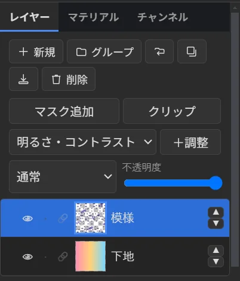
Photoshop や CLIP STUDIO のようなレイヤーです。
- グループ・レイヤーマスク・クリッピング・調整レイヤー（明るさ・コントラスト、色相・彩度、トーンカーブなど）
- 16 種類の描画モードと不透明度
- 行を右クリックで、複製・結合・グループ化・マスク・メッシュへのひも付けなど
- 削除 ボタン（ゴミ箱）、右クリック ＞ 削除、または Shift+Delete。グループは中身ごと消える前に確認が出ます。
- 削除・新規・複製も Ctrl+Z で取り消せます。
メッシュごとに塗り分ける
レイヤーグループをメッシュに ひも付け（🔗）ると、そのグループの絵がそのメッシュの色になります。ひも付いたグループには合成結果のサムネイルと「→ メッシュ名」のバッジが付きます。マテリアルパネルの このメッシュを描く を押せば、グループ作成からひも付けまで 1 クリックです。
メッシュ・パーツだけ表示
モデルの中にメッシュがいくつもあるとき、見たい所だけを表示して塗れます。隠した部分は塗りの対象から外れるので、服の下や髪の内側など、ふだん見えない所も塗れます。
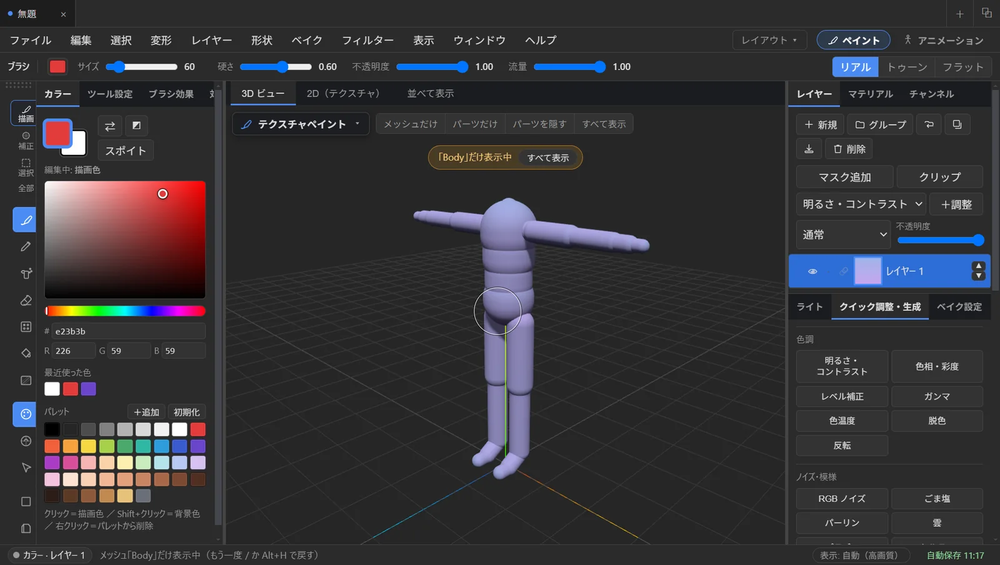
| キー | 動作 |
|---|---|
| /（テンキーの / も可） | カーソルの下のメッシュだけ表示（もう一度で戻す） |
| Shift+H | カーソルの下のパーツ（つながった部分）だけ表示 |
| H | カーソルの下のパーツを隠す |
| Alt+H | すべて表示 |
キーを使わなくても、3D ビュー左上の メッシュだけ / パーツだけ / パーツを隠す / すべて表示 を押してからモデルをクリックすれば同じことができます。
テクスチャの取り込み
モデルを開くと、同じフォルダー（または FBX フォルダーの親）にあるテクスチャ画像を探して、マテリアルごとに使う画像を名前から自動で選んだ割り当て画面が出ます。例えば「Hair」には Hair.png、「Cos」には TEX Cos.png のように選ばれます。マスク・法線・AO などの画像は候補から外れます。
- 必要なら選び直して 取り込む。画像ごとのレイヤーグループができ、各メッシュのマテリアルにひも付きます。
- 同じ画像を使うマテリアルは 1 つのグループを共有するので、どれを塗っても同じ絵に描かれます。
- 「Hair_transparent」のような透過用マテリアルには、透過マスク（白 = 見える、黒 = 透明）も自動で選ばれます。
- glb / VRM に埋め込まれたテクスチャも選べます。あとからでも ファイル ＞ モデルのテクスチャを取り込む で開けます。
複数のマテリアルを持つメッシュは、読み込み時にマテリアルごとのメッシュ（例: Body → Body_Face / Body_Eye…）に分かれます。
マテリアルと透過
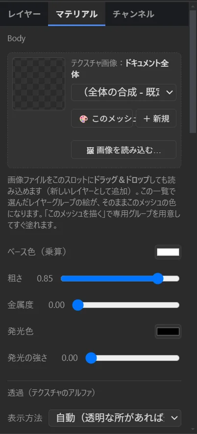
右の マテリアル タブで、選んだメッシュの見た目を調整します。
- テクスチャ画像スロット: どのレイヤーグループをこのメッシュの色にするか。「このメッシュを描く」「＋ 新規」「画像を読み込む…」もここ。
- ベース色・粗さ・金属度・発光
- プラスチック・金属・発光などのクイック設定、他のメッシュへのコピー
透過（テクスチャのアルファ）
テクスチャの透明な部分は、3D モデルでも透けて表示されます。
- 自動（既定）: 透明な画素があれば透かします。はっきり抜けた穴は「切り抜き」、なめらかな半透明が多ければ「半透明」に。
- 切り抜き: 髪の毛先・まつ毛・レース向き。しきい値で抜ける濃さを調整。
- 半透明: ガラスやグラデーション向き。
消しゴムで消した所も、そのまま 3D で透けます。
フィルター・模様
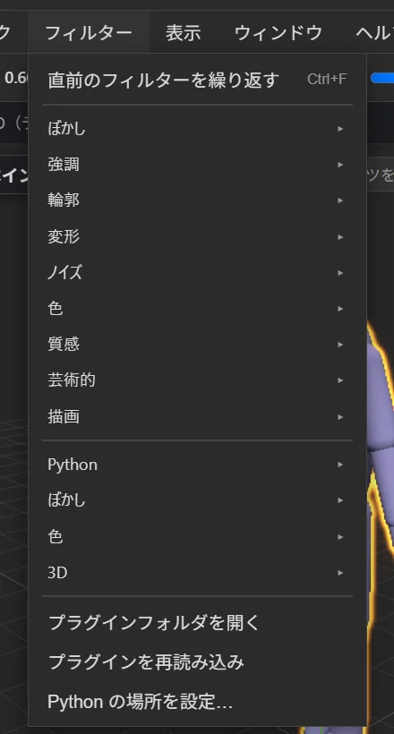
フィルター メニューに、ぼかし・シャープ・輪郭・変形・ノイズ・色調補正・芸術的など 50 種類以上があります。アクティブなレイヤー（またはマスク）に効き、取り消せます。Ctrl+F で直前のフィルターをもう一度。
右の クイック調整・生成 パネルからは、明るさ・色相・レベル補正などの色調と、パーリン・雲・セルラー・木目・大理石などの模様を 1 クリックで呼び出せます。
メニュー下半分の項目は Python プラグイン です。自分で追加することもできます。
凹凸（ノーマル）
Tab でカラーと法線（凹凸）を切り替えます。法線モードでは、同じツールで 盛り上げ・彫り込み・ならす・ざらつき を描けます。高ポリゴン化やベイクは不要で、塗るだけで凹凸が付きます。ビューの縁が青いときが法線モードです。
結果は 法線 PNG を書き出す でノーマルマップとして保存できます。
ベイク
ベイク メニューまたは ベイク設定 パネルから、AO（アンビエントオクルージョン）・ライトの陰影・オブジェクト空間法線をテクスチャに焼き込めます。高ポリゴンのモデルから低ポリゴンへのタンジェント法線ベイクにも対応しています。
アニメーション
右上の アニメーション（Ctrl+2）に切り替えます。ボーンのあるモデル（ヒューマノイドなら最適）で使えます。
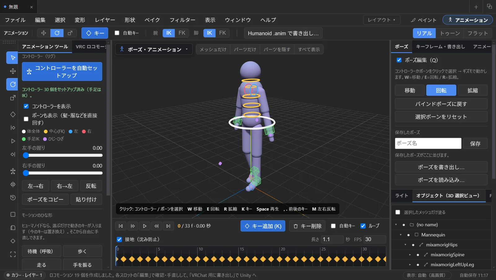
- コントローラーを自動セットアップ を押すと、手足の IK と体のコントローラーが付きます。腰の緑の四角い輪（腰 IK）を動かすと、胸から上はその場に残ったまま腰だけを揺らせます。
- コントローラーをクリックして、W 移動 / E 回転 / R 拡縮 でポーズを付けます。M で左右反転。
- タイムラインで時刻を選んで K（キー追加）。時刻を変えてポーズ → キー、をくり返します。自動キー を ON にすると、動かすだけでキーが入ります。
- Space で再生。, . で前後のキーへ。
- モーションのひな形: 待機（呼吸）・歩く・走る・手を振るなどを選ぶだけでキーが入ります。そこから手直しできます。
- アニメーションモードの Ctrl+Z / Ctrl+Y は、キーの追加・削除・移動やポーズ変更を 1 手ずつ戻します（最大 100 手）。
- FBX / glTF に入っているアニメーションクリップの再生と、キーフレームへの焼き込みもできます。
VRChat ロコモーション
アニメーションモードの左にある VRC ロコモーション タブで、VRChat の移動用アニメーションを一式作れます。
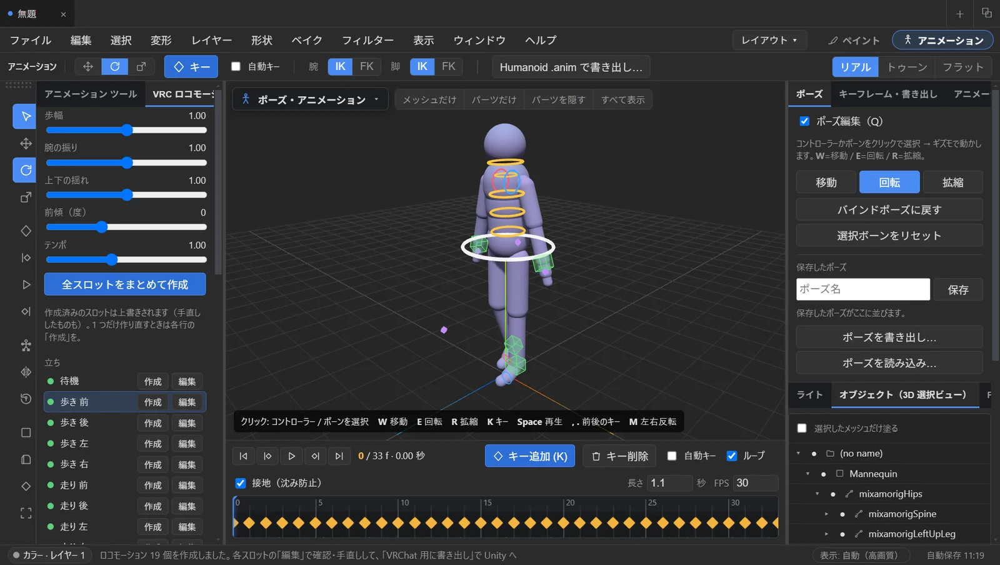
- 全スロットをまとめて作成: 待機・歩き（前後左右）・走り（前後左右）・ダッシュ・しゃがみ・伏せ・空中・着地の 19 スロットを自動で作ります。どれも その場で動き、ループのつなぎ目がそろった状態です。歩幅・腕の振り・上下の揺れ・前傾・テンポのスライダーで雰囲気を変えられます。
- 各スロットの 編集 でタイムラインに読み込み、手直しして K。変更はそのスロットに自動保存されます。「ループを閉じる」「その場に固定」「反対側を左右反転で作成」も使えます。
- VRChat 用に書き出し… で Unity プロジェクトの
Assetsフォルダーを選ぶと、PSD3DPaint_VRCフォルダーができます。 - Unity でアバターの Rig を Humanoid にして、Tools ＞ PSD 3D Paint ＞ VRC ロコモーションを作成 を実行。アニメーションと Animator Controller が作られ、VRChat SDK があれば Playable Layers の Base に自動で設定されます。
.anim として書き出せます。Unity へ書き出し
上のバーの Humanoid .anim で書き出し…、または「キーフレーム・書き出し」タブから書き出します。
- ヒューマノイド（マッスル）: Unity の Humanoid と同じマッスル値（95 本のカーブ＋ルート）の
.anim。Rig が Humanoid なら、別のアバターにもそのまま 使えます。Unity 2022.3 で検証済みです。 - このモデル専用: ボーンの回転をそのまま記録する Generic の
.anim。
モデルは T ポーズで作られたものがおすすめです。
レイアウト
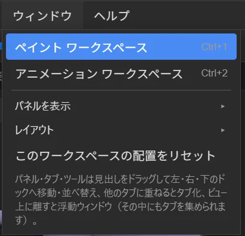
パネル・タブ・ツール列は、Unity のように左・右・下のドックや浮動ウィンドウへ自由に動かせます。
- タブの見出しをドラッグ: 並べ替え、別のタブ帯へ移動、ビューの上で離すと浮動ウィンドウ。
- 右上の レイアウト ▾（または ウィンドウ ＞ レイアウト）: 標準 / ワイド / コンパクト / 左にまとめる / ツールを浮動ウィンドウに のプリセット。
- 「現在のレイアウトを保存…」で名前を付けて保存。JSON に書き出して別の PC へ持っていけます。
- 迷ったら ウィンドウ ＞ このワークスペースの配置をリセット。
軽量表示
右下の 表示: 自動 を押すと、自動 → 軽量 → 高画質 を切り替えられます。自動では、15 万ポリゴンを超えるモデルや低スペックの PC で軽量表示になります。視点を動かしている間・塗っている間・アニメ再生中だけ解像度を下げ、止めるとすぐ高画質に戻ります。
FBX のシェイプキー（表情など）は既定で読み込みません。読み込みが数倍速くなります。必要なら 環境設定 ＞ 一般 で読み込むようにできます。
保存と書き出し
| やりたいこと | 操作 |
|---|---|
| 作業を保存（あとで続きから） | Ctrl+S でプロジェクト .p3dp。レイヤー・モデル・マテリアル・アニメーションまで全部入ります。 |
| Photoshop / CLIP STUDIO で開く | PSD を書き出す（Ctrl+E）。レイヤー構造・不透明度・描画モードを保持。 |
| テクスチャ画像として使う | PNG / JPEG / WebP を書き出す（統合） |
| ノーマルマップ | 法線 PNG を書き出す |
作業内容は自動保存もされます。アプリが落ちても、次に起動したときに復元できます。
アップデート
起動時に新しいバージョンがあると「新しいバージョンがあります」と表示されます。更新する を押すとダウンロードが始まり、終わったらウィンドウ上部の 再起動して更新 を押すだけです。いまのバージョンは ヘルプ ＞ バージョン情報… で確認できます。
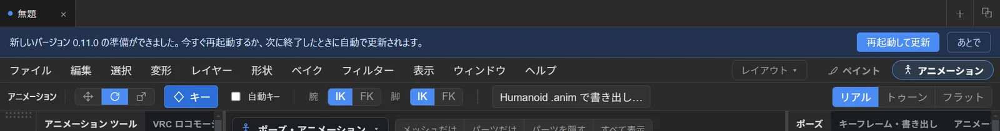
手動で確認するには ヘルプ ＞ 更新を確認…。
ショートカット
すべて 環境設定 ＞ ショートカット（Ctrl+,）で変更できます。以下は初期値です。アプリ内では F1 で一覧を開けます。
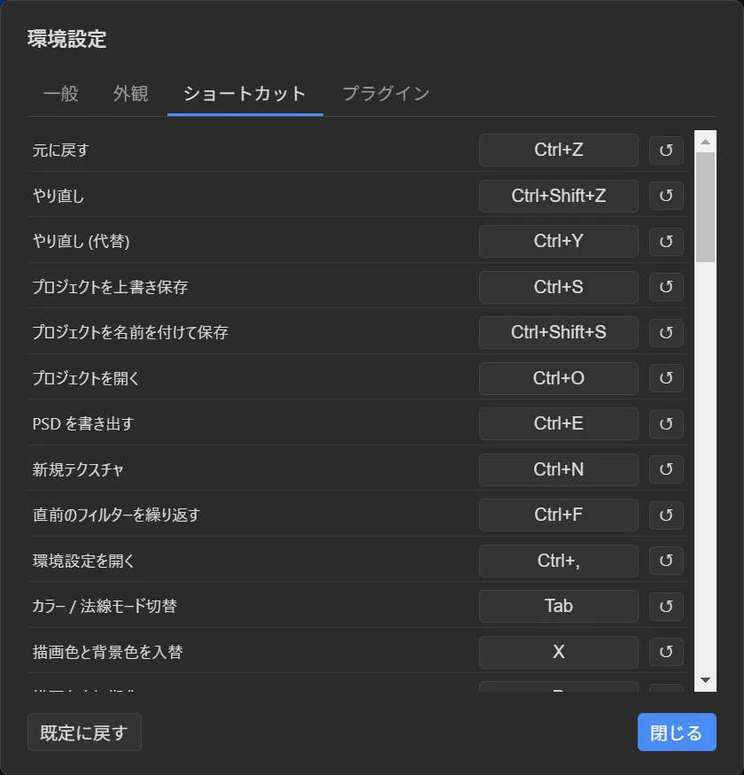
ファイル・編集
| Ctrl+N | 新規テクスチャ |
| Ctrl+O / Ctrl+S / Ctrl+Shift+S | プロジェクトを開く / 保存 / 名前を付けて保存 |
| Ctrl+E | PSD を書き出す |
| Ctrl+Z / Ctrl+Shift+Z（Ctrl+Y） | 元に戻す / やり直し |
| Ctrl+F | 直前のフィルターを繰り返す |
| Ctrl+1 / Ctrl+2 | ペイント / アニメーション ワークスペース |
ツール
| B / N / A / E | ブラシ / 鉛筆 / エアブラシ / 消しゴム |
| S / R | にじみ / ぼかし |
| G / Shift+G | 塗りつぶし / グラデーション |
| T / Ctrl+T | テクスチャブラシ / 変形 |
| K / J | クローン / 修復 |
| O / Shift+O | 覆い焼き / 焼き込み |
| I | スポイト |
| M / L / U | 矩形選択 / なげなわ選択 / ファジー選択 |
| [ / ] | ブラシを小さく / 大きく |
表示・その他
| / / Shift+H / H / Alt+H | メッシュだけ表示 / パーツだけ表示 / パーツを隠す / すべて表示 |
| Shift+Delete | レイヤー / グループを削除 |
| Tab | カラー ⇔ 法線（凹凸） |
| Q | クイックマスク |
| X / D | 描画色と背景色を入れ替え / 初期化 |
| Ctrl+A / Ctrl+D / Ctrl+I | すべて選択 / 選択解除 / 選択範囲を反転 |
| Shift+Z | シェーディング（ソリッド / ワイヤー）切り替え |
| Ctrl+Shift+T / Ctrl+Shift+N | 新しいタブ / 新しいウィンドウ |
| F1 | ショートカット一覧 |
アニメーション
| W / E / R | 移動 / 回転 / 拡縮 |
| K | キーを追加 |
| Space | 再生 / 停止 |
| , / . | 前 / 次のキーへ |
| M | 左右反転 |